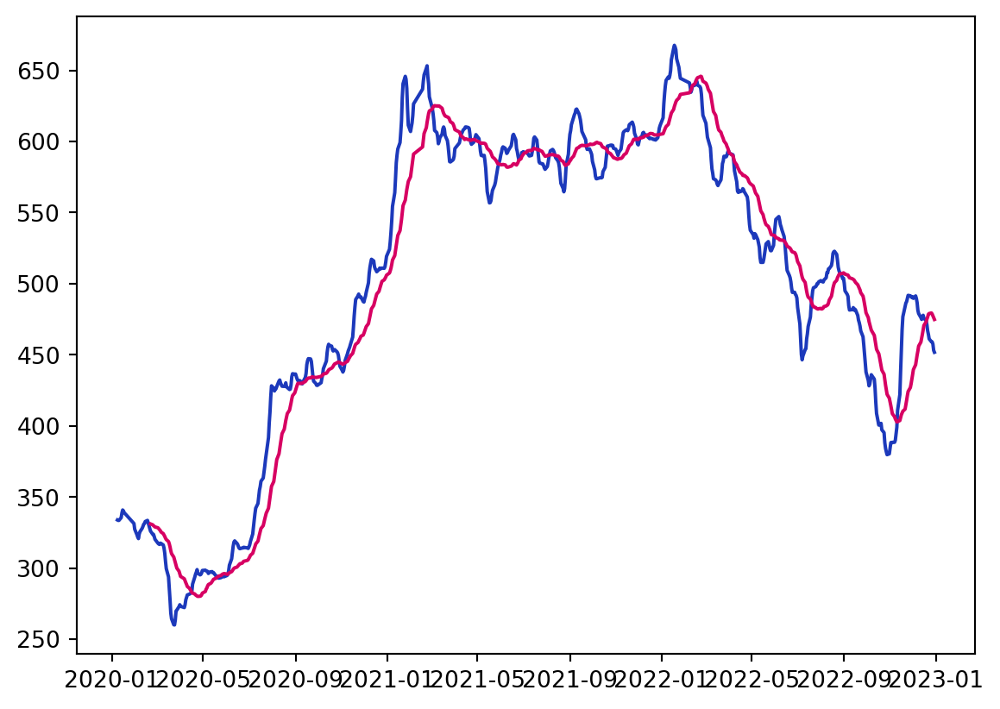

import yfinance as yf
import pandas as pd股票數據預處理與雙均線策略
macroeconomics
數據預處理
我們使用 yfinance 這個爬蟲套件，可以抓取 Yahoo奇摩股市上的股票資料，包含日期、開盤價、收盤價、最低/高價、交易量等。此外，我們使用 pandas 幫助我們進行一些數據處理。
獲取資料與保存資料
假設我們想要看台積電(2330.TW)從 2020 年 1 月 1 日至 2023 年 1 月 1 日的股票資訊，我們使用 yf.download("股票代碼", "起始日期", "結束日期")獲取資料。
df = yf.download("2330.tw", "2020-01-01", "2023-01-01")[*********************100%***********************] 1 of 1 completed獲取數據後，我們一般會先查看資料是否正確：
df.head(6) # 查看 6 筆資料| Open | High | Low | Close | Adj Close | Volume | |
|---|---|---|---|---|---|---|
| Date | ||||||
| 2020-01-02 | 332.5 | 339.0 | 332.5 | 339.0 | 313.791595 | 31754120 |
| 2020-01-03 | 344.0 | 345.0 | 335.5 | 339.5 | 314.254456 | 41811268 |
| 2020-01-06 | 333.0 | 334.5 | 332.0 | 332.0 | 307.312164 | 45343057 |
| 2020-01-07 | 332.5 | 333.0 | 326.5 | 329.5 | 304.998016 | 50879181 |
| 2020-01-08 | 325.0 | 333.0 | 325.0 | 329.5 | 304.998016 | 37567748 |
| 2020-01-09 | 335.0 | 337.5 | 333.5 | 337.5 | 312.403137 | 31481504 |
如果我們想要將數據保存下來，可以使用以下方式：
df.to_csv("2330.TW.csv")為了後續處理之便，我們將剛剛儲存的資料讀取進來：
# 讀取檔案
df = pd.read_csv("2330.TW.csv")資料型別
由於我們之後需要做一些計算，因此我們必須確認每筆資料 是否為可以計算的型別。我們以開盤價為例：
# 逐一檢查型別
df['Open'].dtype
# 一次檢查所有欄位型別
df.info()<class 'pandas.core.frame.DataFrame'>
RangeIndex: 734 entries, 0 to 733
Data columns (total 7 columns):
# Column Non-Null Count Dtype
--- ------ -------------- -----
0 Date 734 non-null object
1 Open 734 non-null float64
2 High 734 non-null float64
3 Low 734 non-null float64
4 Close 734 non-null float64
5 Adj Close 734 non-null float64
6 Volume 734 non-null int64
dtypes: float64(5), int64(1), object(1)
memory usage: 40.3+ KB其結果為 float64，是可以進行計算的型別。
接下來我們要將日期先轉換為 Python 中可以進行計算的日期格式，接著將日期變成索引，以方便查找我們需要日期的數據。
# 轉換格式
df['Date'] = pd.to_datetime(df['Date'])
# 確認型別
df.info()
# 建立索引
df.set_index('Date', inplace = True)
# 查看結果
df.head(6)<class 'pandas.core.frame.DataFrame'>
RangeIndex: 734 entries, 0 to 733
Data columns (total 7 columns):
# Column Non-Null Count Dtype
--- ------ -------------- -----
0 Date 734 non-null datetime64[ns]
1 Open 734 non-null float64
2 High 734 non-null float64
3 Low 734 non-null float64
4 Close 734 non-null float64
5 Adj Close 734 non-null float64
6 Volume 734 non-null int64
dtypes: datetime64[ns](1), float64(5), int64(1)
memory usage: 40.3 KB| Open | High | Low | Close | Adj Close | Volume | |
|---|---|---|---|---|---|---|
| Date | ||||||
| 2020-01-02 | 332.5 | 339.0 | 332.5 | 339.0 | 313.791595 | 31754120 |
| 2020-01-03 | 344.0 | 345.0 | 335.5 | 339.5 | 314.254456 | 41811268 |
| 2020-01-06 | 333.0 | 334.5 | 332.0 | 332.0 | 307.312164 | 45343057 |
| 2020-01-07 | 332.5 | 333.0 | 326.5 | 329.5 | 304.998016 | 50879181 |
| 2020-01-08 | 325.0 | 333.0 | 325.0 | 329.5 | 304.998016 | 37567748 |
| 2020-01-09 | 335.0 | 337.5 | 333.5 | 337.5 | 312.403137 | 31481504 |
簡單股票分析
首先我們先輸出所有收盤價比開盤價上漲 \(3\%\) 以上的日期。用數學的方式表達即是 \[ \frac{\text{Close}_{t} - \text{Open}_{t}}{\text{Open}_{t}} > 0.03 \]
因此我們可以寫下以下程式碼：
(df['Close'] - df['Open']) / df['Open'] > 0.03Date
2020-01-02 False
2020-01-03 False
2020-01-06 False
2020-01-07 False
2020-01-08 False
...
2022-12-26 False
2022-12-27 False
2022-12-28 False
2022-12-29 False
2022-12-30 False
Length: 734, dtype: bool可以發現回傳的值為布林值，因此可以作為行索引(row index)。
# 根據行索引選取並輸出日期
df.loc[(df['Close'] - df['Open']) / df['Open'] > 0.03].indexDatetimeIndex(['2020-03-13', '2020-03-20', '2021-01-21', '2022-05-31',
'2022-07-07', '2022-11-09', '2022-11-15', '2022-11-22'],
dtype='datetime64[ns]', name='Date', freq=None)我們即可得知這些日期符合我們的搜尋標準(searching standard)。
如果我們現在將搜尋標準改為輸出所有開盤價比前日收盤價小於 \(2\%\) 的日期，我們可以用 shift(1) 來獲取前日的資料。以數學式表達即為
\[ \frac{\text{Open}_{t} - \text{Close}_{t-1}}{\text{Close}_{t-1}} < -0.02 \]
# 根據行索引選取並輸出日期
df.loc[(df['Open'] - df['Close'].shift(1)) / df['Close'].shift(1) < -0.02].indexDatetimeIndex(['2020-01-16', '2020-01-30', '2020-02-18', '2020-03-02',
'2020-03-09', '2020-03-13', '2020-03-17', '2020-03-19',
'2020-03-23', '2020-03-30', '2020-05-04', '2020-05-18',
'2020-06-12', '2020-09-04', '2021-01-14', '2021-01-22',
'2021-01-28', '2021-02-24', '2021-02-26', '2021-03-04',
'2021-03-05', '2021-03-09', '2021-03-24', '2021-05-13',
'2021-05-17', '2021-06-21', '2021-07-16', '2021-08-18',
'2021-09-22', '2021-09-29', '2022-03-07', '2022-03-08',
'2022-03-28', '2022-04-01', '2022-04-27', '2022-05-06',
'2022-05-10', '2022-05-19', '2022-06-10', '2022-06-13',
'2022-07-04', '2022-08-29', '2022-09-07', '2022-09-14',
'2022-09-26', '2022-09-30', '2022-10-11', '2022-10-17',
'2022-11-03', '2022-11-28', '2022-12-16', '2022-12-23'],
dtype='datetime64[ns]', name='Date', freq=None)雙均線策略
均線（Moving Average）是一種技術分析工具，常用於股票、外匯和其他金融市場的分析。它是通過計算一段時間內的價格平均值來平滑價格走勢，從而消除價格波動的短期噪音，使得長期趨勢更加清晰可見。
均線的計算很簡單，只需將一段時間內的收盤價相加，然後除以該段時間的天數即可得到均線值。常見的均線包括 5 日均線、10 日均線、20 日均線、50 日均線和 200 日均線等。
不同的均線代表了不同時間範圍的平均價格，長期均線（如 200 日均線）較為平滑，反映了較長時間的趨勢變化，而短期均線（如 5 日均線）較為敏感，更能反映近期價格變動。
均線的計算方式有許多種，大致可以分為以下三類：
- 簡單移動平均線(simple moving average，SMA)： \[ \text{MA} = \frac{1}{n} \sum_{i=1}^{n} P_i \]
\(n\)代表計算均線的天數，\(P_i\)代表第 \(i\) 天的價格。
- 加權移動平均線(weighted moving average，WMA)： \[ \text{WMA} = \frac{\sum_{i=1}^{n} w_i \cdot P_i}{\sum_{i=1}^{n} w_i} \]
\(w_i\) 代表第 \(i\) 天的權重。
- 指數移動平均線(exponential moving average，EMA)： \[ \text{EMA}_t = \alpha \cdot P_t + (1-\alpha) \cdot \text{EMA}_{t-1} \]
\(\text{EMA}_t\) 代表第 \(t\) 天的指數移動平均值，\(\alpha\) 是平滑指數，通常取 \(2/(n+1)\)，其中 \(n\) 為計算均線的天數。
求均線方式
假設我們分別要求算收盤價的 5 日均線與 10 日均線，我們可以透過 rolling() 與 mean() 這兩個函數進行以下操作：
ma5 = df['Close'].rolling(5).mean()
ma30 = df['Close'].rolling(30).mean()接著我們利用 matplotlib 套件繪製均線。
# 引入套件
import matplotlib.pyplot as plt
%matplotlib inline
# 繪製均線
plt.plot(ma5, color = "#1c39bb")
plt.plot(ma30, color = "#d70062")
黃金交叉與死亡交叉
均線常用於分析股價走勢、判斷趨勢的轉折點以及進行交叉分析。當短期均線穿越長期均線時，被稱為「黃金交叉」，被認為是一個多頭信號，暗示著股價可能上漲；相反，當短期均線跌破長期均線時，被稱為「死亡交叉」，是一個空頭信號，暗示著股價可能下跌。我們根據黃金交叉與死亡交叉的定義建立自定義函式：
def golden_death_cross_strategy(prices, short_window=5, long_window=30):
# 計算短期均線和長期均線
short_ma = pd.Series(prices).rolling(window=short_window, min_periods=1).mean()
long_ma = pd.Series(prices).rolling(window=long_window, min_periods=1).mean()
# 判斷黃金交叉和死亡交叉
signals = pd.Series(0, index=range(len(prices)))
# 交叉信號：0表示無交叉，1表示黃金交叉，-1表示死亡交叉
for i in range(1, len(prices)):
if short_ma[i] > long_ma[i] and short_ma[i - 1] <= long_ma[i - 1]:
signals[i] = 1 # 黃金交叉
elif short_ma[i] < long_ma[i] and short_ma[i - 1] >= long_ma[i - 1]:
signals[i] = -1 # 死亡交叉
return signals
# 呼叫函數，得到交叉信號
closing_prices = df['Close']
signals = golden_death_cross_strategy(closing_prices)
# 輸出交叉信號
for i, signal in enumerate(signals):
if signal == 1:
print(f"黃金交叉：第 {i+1} 天")
elif signal == -1:
print(f"死亡交叉：第 {i+1} 天")死亡交叉：第 6 天
黃金交叉：第 9 天
死亡交叉：第 14 天
黃金交叉：第 25 天
死亡交叉：第 27 天
黃金交叉：第 66 天
死亡交叉：第 89 天
黃金交叉：第 90 天
死亡交叉：第 91 天
黃金交叉：第 100 天
死亡交叉：第 167 天
黃金交叉：第 169 天
死亡交叉：第 179 天
黃金交叉：第 186 天
死亡交叉：第 201 天
黃金交叉：第 206 天
死亡交叉：第 280 天
黃金交叉：第 304 天
死亡交叉：第 313 天
黃金交叉：第 317 天
死亡交叉：第 320 天
黃金交叉：第 339 天
死亡交叉：第 364 天
黃金交叉：第 370 天
死亡交叉：第 375 天
黃金交叉：第 386 天
死亡交叉：第 392 天
黃金交叉：第 403 天
死亡交叉：第 419 天
黃金交叉：第 438 天
死亡交叉：第 465 天
黃金交叉：第 470 天
死亡交叉：第 476 天
黃金交叉：第 486 天
死亡交叉：第 509 天
黃金交叉：第 514 天
死亡交叉：第 515 天
黃金交叉：第 546 天
死亡交叉：第 547 天
黃金交叉：第 584 天
死亡交叉：第 593 天
黃金交叉：第 619 天
死亡交叉：第 647 天
黃金交叉：第 699 天
死亡交叉：第 726 天Reuse
Citation
BibTeX citation:
@online{sung2023,
author = {Sung, Anthony},
title = {股票數據預處理與雙均線策略},
date = {2023-07-23},
url = {https://yueswater-blog.netlify.app/posts/2023-07-23-trading-preprocessing-and-dual-MA/},
langid = {en}
}
For attribution, please cite this work as:
Sung, Anthony. 2023. “股票數據預處理與雙均線策略.” July 23,
2023. https://yueswater-blog.netlify.app/posts/2023-07-23-trading-preprocessing-and-dual-MA/.